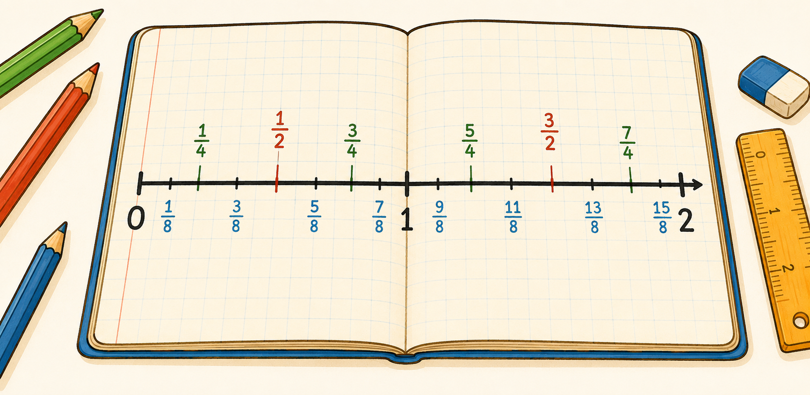
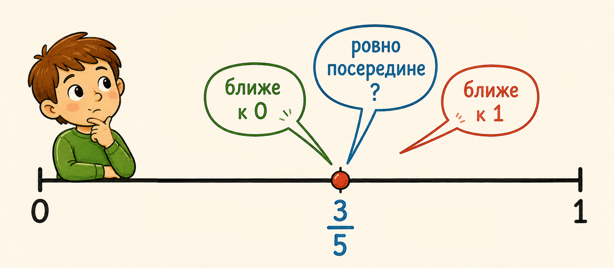
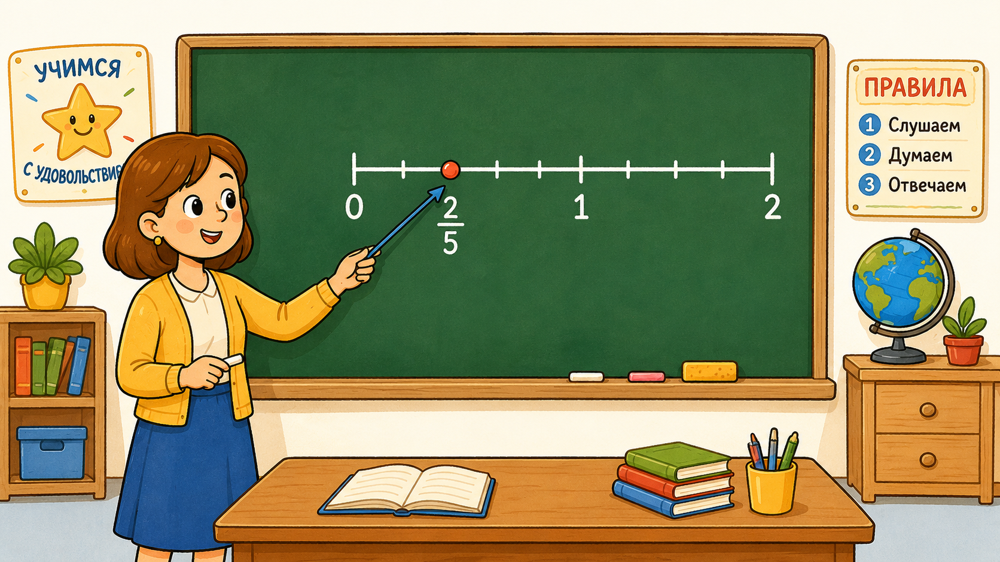

Числовая прямая — один из самых полезных инструментов математики. Благодаря ей числа перестают быть просто символами: каждое число занимает своё строгое место на прямой.
Главное правило: чем правее точка, тем больше число. Это работает и для целых чисел, и для дробей. Например, 34 стоит правее 14 — значит, 34 больше.
Чтобы найти точку дроби, нужно разделить отрезок от 0 до 1 на столько равных частей, сколько говорит знаменатель, и отсчитать нужное количество частей от нуля. Дробь 25 — значит, делим на 5 частей и берём 2.